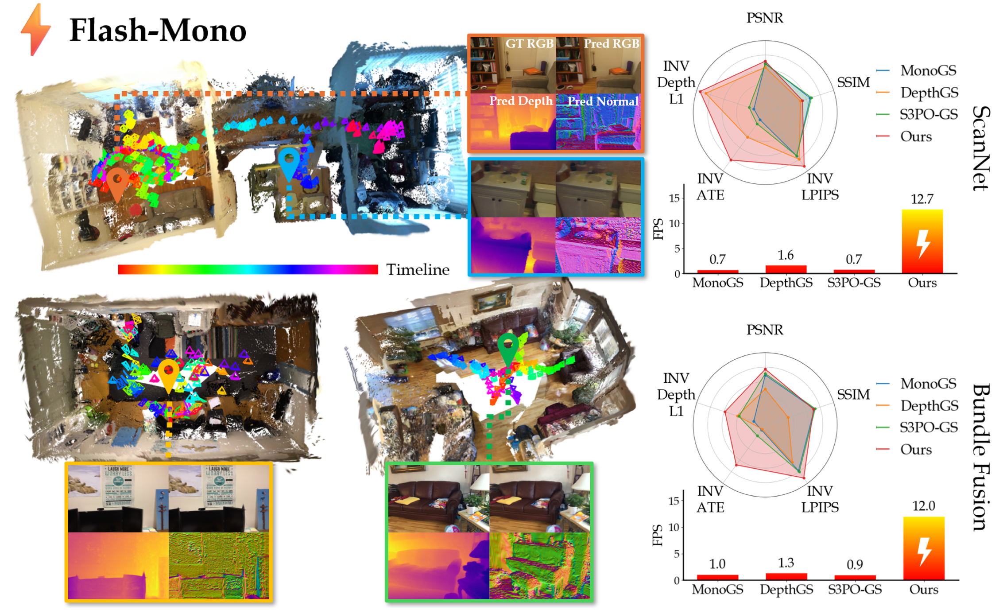
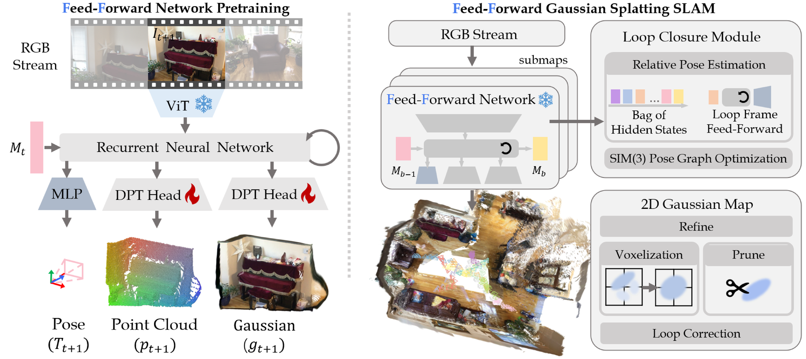
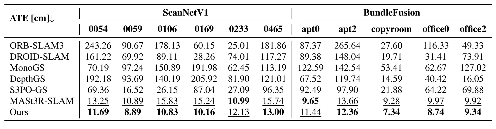
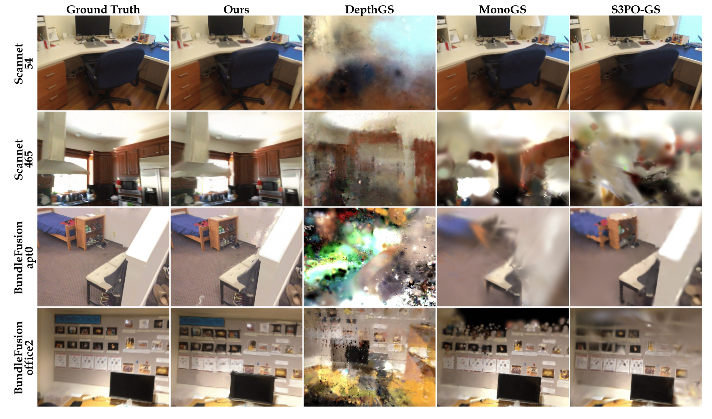
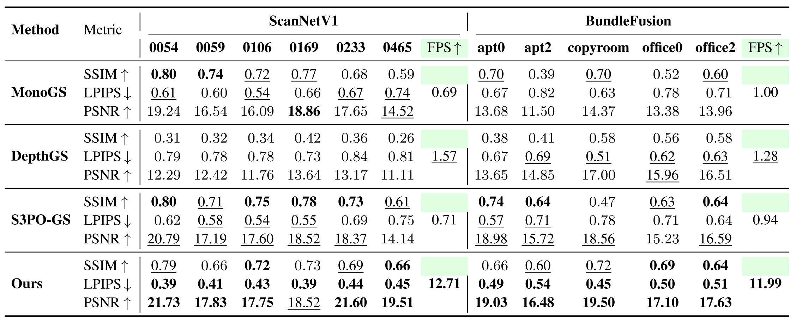
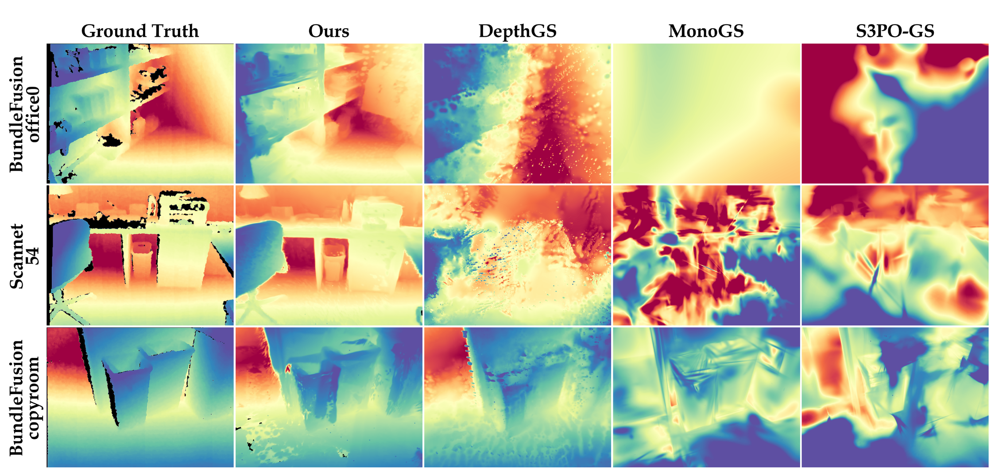
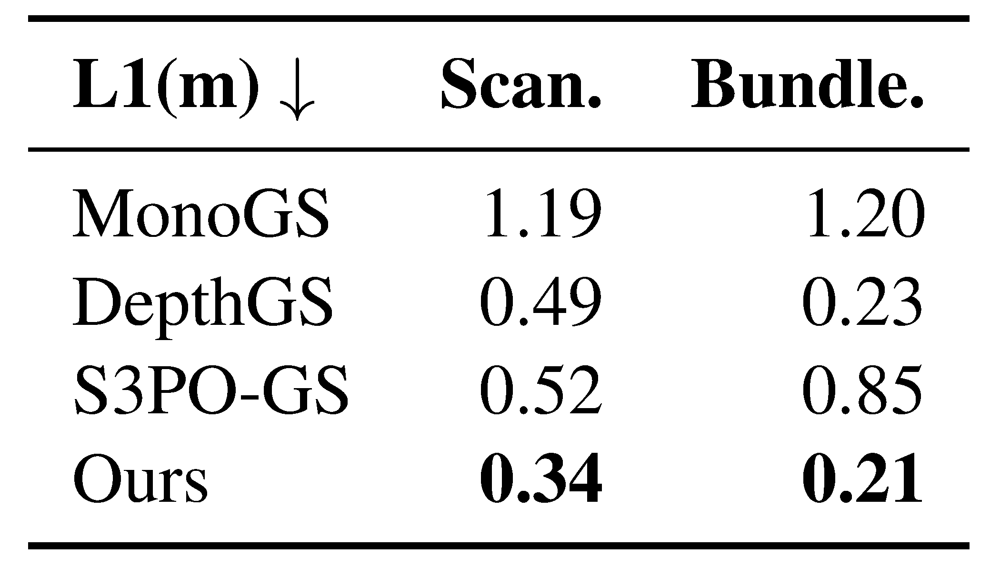
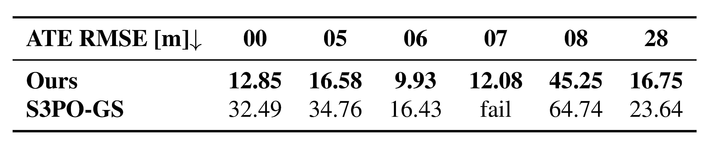
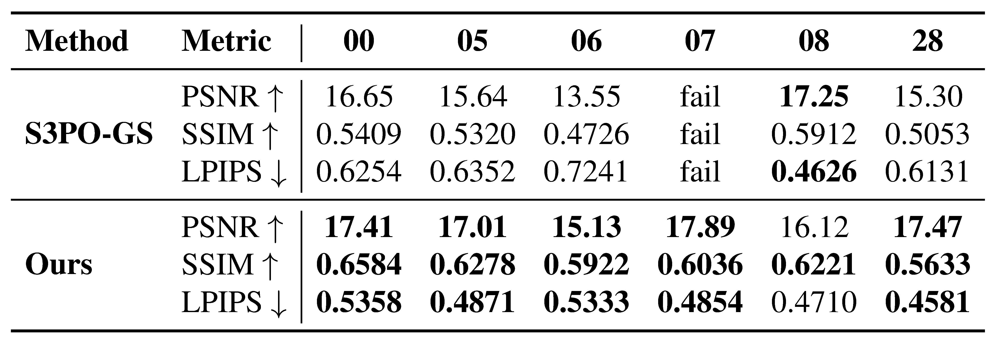
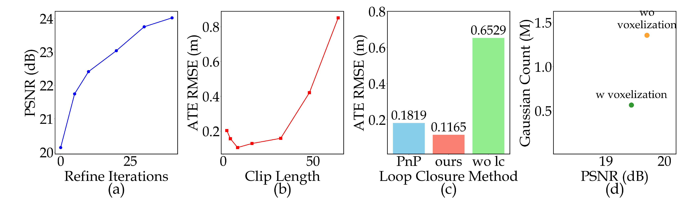

핵심 요약
Flash-Mono는 monocular GS-SLAM을 keyframe마다 Gaussian을 새로 학습하는 방식에서 feed-forward Predict-and-Refine 시스템으로 바꾼다. Pose와 per-pixel 2D Gaussian surfel을 온라인으로 예측하고, recurrent hidden state를 loop descriptor로 재사용해 전역 Sim(3) drift를 보정한다.
Flash-Mono는 recurrent feed-forward 2DGS 예측, hidden-state loop closure, lightweight 2DGS backend를 결합해 monocular Gaussian Splatting SLAM을 더 빠르고 전역적으로 일관되게 만든다.
Feed-forward GS-SLAM
Pose와 per-pixel Gaussian attributes를 직접 예측해 keyframe별 Train-from-Scratch 최적화 병목 축소.
Hidden-state Loop Closure
Recurrent hidden state를 submap descriptor로 저장하고, 재방문 시 한 번의 conditional forward pass로 loop constraint 생성.
2D Gaussian Surfels
3D ellipsoid 대신 planar 2DGS surfel을 사용해 floater를 줄이고 surface geometry prior 강화.
Real-time Mapping
Voxelization, fusion, 20-iteration local refinement로 rendering/tracking 품질과 10 FPS+ 속도 동시 추구.
흥미로운 부분은 단순히 Gaussian 최적화를 빠르게 만든 것이 아니라, recurrent hidden state를 prediction을 위한 temporal memory이자 loop closure를 위한 compact place descriptor로 동시에 쓴다는 점이다.
Train-from-Scratch
Gaussian appearance/geometry를 keyframe마다 반복 최적화해 품질은 얻지만 보통 1 FPS 수준으로 느림.
Batch Consistency
Multi-frame consistency는 강하지만 전체 frame을 한 번에 처리해야 해 streaming SLAM에 바로 맞지 않음.
Streaming Prediction
Recurrent hidden state로 온라인 예측을 유지하고, 필요할 때 loop closure와 backend refinement로 보정.
논문 상세 정리
아래부터는 기존 논문 내용을 최대한 담은 상세 해석이다. 핵심 흐름에서 벗어나는 배경지식, notation, 부가 자료는 접어두었다.
Problem: monocular GS-SLAM은 왜 느리고 불안정한가
Flash-Mono의 문제의식은 monocular GS-SLAM이 dense하고 renderable한 map을 만들 수는 있지만, 매 keyframe마다 Gaussian을 새로 최적화하는 구조 때문에 실시간 SLAM으로 쓰기 어렵다는 데서 출발한다. 단안 입력은 scale ambiguity가 있고, single-frame geometry prior는 frame 사이 scale consistency를 보장하지 못해 장기 trajectory와 map 품질이 함께 흔들릴 수 있다.

논문은 기존 GS-SLAM의 병목을 세 가지로 분해한 뒤, 각각을 feed-forward prediction, hidden-state memory, 2DGS prior로 대응한다.
Keyframe마다 Gaussian을 수십-수백 iteration 학습해 실시간성이 무너짐.
Monocular depth/flow prior는 frame 간 scale을 일관되게 묶기 어려움.
과거 prediction을 미래 관측으로 다시 정교하게 보정하기 어려움.
Vanilla 3DGS ellipsoid는 explicit surface prior가 약해 floater가 생김.
Flash-Mono는 “최적화 iteration을 줄인다”보다 더 강하게, Gaussian 생성 자체를 recurrent model의 prediction 문제로 바꾼다.
| 기존 병목 | Flash-Mono의 대응 | 효과 |
|---|---|---|
| Keyframe optimization | Pose와 2DGS attributes를 feed-forward로 직접 예측 | 10 FPS+ 목표 |
| Long-horizon drift | Submap hidden state를 loop descriptor로 재사용 | Sim(3) pose graph correction |
| Noisy geometry | 2D Gaussian surfel 사용 | Surface prior 강화 |
이 논문은 monocular GS-SLAM을 “tracking과 mapping을 계속 최적화하는 시스템”이 아니라, recurrent model이 pose와 map primitive를 계속 예측하고 backend가 최소한으로 정제하는 시스템으로 재해석한다.
Related Work 세부 맥락 보기
Related Work는 Flash-Mono가 feed-forward 3D foundation model과 monocular GS-SLAM 사이의 간격을 메우는 시도임을 보여준다.
Image pair point map을 forward pass로 예측하지만 persistent SLAM을 직접 겨냥하지 않음.
Multi-frame context와 recurrent/batch geometry는 강하지만 streaming latency와 long-horizon correction이 별도 과제.
Gaussian map은 만들지만 per-keyframe optimization 비용이 큼.
Outdoor/dynamic robustness를 다루지만 Train-from-Scratch 계열 병목은 남음.
Mechanism: pose와 2DGS map을 어떻게 바로 예측하나
시스템은 recurrent feed-forward frontend, hidden-state loop closure, 2DGS backend mapping으로 나뉜다. Frontend는 RGB stream을 순차적으로 받아 pose와 per-pixel 2DGS를 예측하고, hidden state에는 multi-frame visual context가 누적된다. Backend는 이 raw prediction을 voxelization, fusion, local refinement로 전역 2DGS map에 합친다.

핵심 흐름은 2DGS surface prior → recurrent prediction → hidden-state loop closure → lightweight map fusion이다.
| 구간 | 무엇을 담당하나 | 핵심 출력 |
|---|---|---|
| 2DGS primitive | Surface-like Gaussian surfel로 geometry fidelity 확보 | RGB/depth/accumulation rendering |
| Frontend | Frame별 camera pose와 dense 2DGS attributes 예측 | \(\hat T_t\), \(\hat G_t\), \(M_t\) |
| Loop closure | 과거 hidden state로 current frame을 재해석해 loop constraint 생성 | \(H_{j\rightarrow i}\in Sim(3)\) |
| Backend | Dense prediction을 compact global 2DGS map으로 병합/정제 | voxelized global map |
Flash-Mono는 3D ellipsoid 대신 2D planar Gaussian surfel을 사용한다. 각 surfel은 position, color, opacity, rotation, 2D scale을 가지며, pixel 기여도와 volumetric alpha blending은 아래처럼 계산된다.
각 timestep에서 model은 current image와 이전 hidden state를 받아 pose, dense 2DGS map, 다음 hidden state를 동시에 낸다. 이때 hidden state는 단순 cache가 아니라 과거 frame의 visual/geometric context를 다음 prediction으로 전달하는 recurrent memory다.
Updated image token과 pose token에서 2DGS geometry, appearance, pose를 분리해 회귀한다.
| Head | 출력 | 의미 |
|---|---|---|
| Headmeans | mean / confidence | pixel별 surfel location과 geometry confidence |
| Headgs | opacity / rotation / scale / color | 2DGS appearance와 shape parameter |
| Headpose | camera pose | pose token에서 absolute pose 회귀 |
Training objective / notation 세부 보기
Training objective는 pose, geometry, rendering supervision으로 나뉜다. 본문 흐름에서는 prediction 구조가 더 중요하므로 loss 세부는 보충으로 접어둔다.
| 항 | 역할 | 핵심 notation |
|---|---|---|
| Pose | frame별 absolute camera pose 감독 | \(\hat q_t,\hat\tau_t\) vs. \(q_t,\tau_t\) |
| Geometry | predicted mean과 depth-unprojected target point 정렬 | \(\hat\mu_{t,n}\), \(\mu_{t,n}\), \(\hat c_{t,n}\) |
| Rendering | 2DGS rasterization 결과의 RGB/depth 품질 감독 | \(\hat I_t\), \(\hat D_t\) |
긴 sequence는 submap으로 나누고, 각 submap의 최종 hidden state를 Bag of Hidden States에 저장한다. 현재 frame이 과거 장소를 재방문하면, current frame을 과거 hidden state에 조건화해 한 번 forward pass하고, 같은 image에서 나온 두 point cloud의 scale 차이를 맞춘 뒤 Sim(3) loop constraint를 만든다.
Backend fusion / map correction 세부 보기
Backend는 frontend prediction을 그대로 쌓지 않고, dense primitive를 줄이고 global coordinate에 맞춰 병합한 뒤 필요한 구역만 짧게 refine한다.
Depth variation이 작은 \(2\times2\) block을 merge해 primitive 수를 줄임.
Pose \(T_k\in Sim(3)\)를 이용해 camera primitive를 world coordinate로 변환.
새로 추가된 local region만 약 20 iterations 최적화.
Pose graph 후 originating keyframe에 bind된 Gaussian을 빠르게 rigid transform.
Evidence: 속도, tracking, mapping을 어떻게 검증했나
평가는 indoor ScanNet/BundleFusion과 outdoor KITTI로 나뉜다. Tracking은 ATE RMSE로, rendering은 PSNR/SSIM/LPIPS로, geometry는 Depth L1로 본다. Monocular SLAM의 scale ambiguity 때문에 trajectory 평가는 ground truth와 Sim(3) alignment 후 계산된다.
ScanNet/BundleFusion에서 GS-SLAM baseline과 pose-focused baseline을 함께 비교.
Rendering quality와 FPS를 같이 제시해 품질-속도 trade-off를 확인.
KITTI에서 outdoor scale variance와 dynamic object 조건을 확인.
refinement, submap length, loop closure, adaptive voxelization의 개별 효과를 분리.
Table 1은 ScanNetV1과 BundleFusion에서 ATE RMSE를 비교한다. 논문은 Flash-Mono가 대부분 sequence에서 기존 monocular GS-SLAM보다 낮은 tracking error를 보이고, MASt3R-SLAM과도 경쟁적인 결과를 보인다고 해석한다.

Figure 3과 Table 2는 indoor rendering quality를 보여준다. Flash-Mono는 backend refinement를 20 iterations로 제한하면서도 PSNR/LPIPS와 FPS에서 강한 결과를 보고한다.




KITTI에서는 outdoor scale variance와 dynamic object가 커서 indoor-focused GS-SLAM이 실패하기 쉽다. 논문은 outdoor용 baseline인 S3PO-GS와 비교해 tracking과 rendering 품질을 제시한다.


Figure 5는 backend refinement iteration, submap clip length, loop closure strategy, adaptive voxelization을 나눠 검증한다. 특히 hidden-state loop closure는 no loop closure나 PnP+RANSAC보다 낮은 ATE를 보이며, adaptive voxelization은 Gaussian count를 크게 줄이면서 PSNR 하락을 제한한다.

Usage / Limits: 어떤 상황에서 유용한가
Flash-Mono는 monocular RGB만으로 빠른 renderable map을 만들고 싶을 때 유용하지만, feed-forward model과 hidden-state loop closure가 학습 범위 밖 장면에서 얼마나 안정적인지는 별도 확인이 필요하다.
| 잘 맞는 경우 | 주의할 경우 | 이유 |
|---|---|---|
| Monocular RGB 기반 실시간 dense mapping | 강한 domain shift / 극단적 outdoor 변화 | frontend prediction 품질이 학습 분포에 의존 |
| 3DGS map이 필요한 robotics / embodied perception | loop가 거의 없는 긴 one-way trajectory | hidden-state loop closure의 이점이 줄어듦 |
| 최적화 기반 GS-SLAM의 FPS 병목 해소 | 매우 정밀한 geometry가 우선인 offline reconstruction | lightweight refinement 중심이라 offline heavy optimization과 목적이 다름 |
느낀점
(작성중...)
Problem: why is monocular GS-SLAM slow and unstable?
Flash-Mono starts from a practical bottleneck: monocular GS-SLAM can build dense and renderable maps, but per-keyframe Gaussian optimization makes it too slow for real-time SLAM. Monocular input also has scale ambiguity, and single-frame geometry priors do not guarantee multi-view scale consistency.
The paper decomposes the bottleneck into optimization cost, scale inconsistency, drift, and weak surface geometry.
Dozens to hundreds of Gaussian optimization iterations per keyframe prevent real-time operation.
Monocular depth or flow priors cannot always keep scale consistent across frames.
Past predictions are difficult to refine with future observations in a streaming system.
Vanilla 3DGS ellipsoids lack explicit surface priors and can create floaters.
The paper reframes monocular GS-SLAM as a system where a recurrent model predicts pose and map primitives, while the backend only lightly refines and globally corrects them.
Detailed Related Work context
Flash-Mono connects feed-forward 3D foundation models with monocular GS-SLAM.
Predict pairwise point maps, but are not designed as persistent SLAM systems.
Strong multi-frame geometry, but streaming latency and long-horizon correction remain separate issues.
Build Gaussian maps, but still pay per-keyframe optimization costs.
Improve outdoor or dynamic robustness, while the Train-from-Scratch bottleneck largely remains.
Mechanism: how does it predict pose and 2DGS maps?
The system has three main parts: a recurrent feed-forward frontend, hidden-state loop closure, and a 2DGS mapping backend. The frontend processes RGB frames sequentially, predicts camera pose and per-pixel 2DGS attributes, and stores multi-frame context in a hidden state.
The method can be read as 2DGS prior → recurrent prediction → hidden-state loop closure → lightweight map fusion.
| Part | Role | Key output |
|---|---|---|
| 2DGS primitive | Use surface-like Gaussian surfels for geometry fidelity | RGB/depth/accumulation rendering |
| Frontend | Predict camera pose and dense 2DGS attributes per frame | \(\hat T_t\), \(\hat G_t\), \(M_t\) |
| Loop closure | Relocalize the current frame using a past hidden state | \(H_{j\rightarrow i}\in Sim(3)\) |
| Backend | Fuse dense predictions into a compact global 2DGS map | voxelized global map |
Flash-Mono uses 2D planar Gaussian surfels instead of volumetric 3D ellipsoids. The surfel contribution and alpha blending are defined as follows.
At each timestep, the model takes the current image and previous hidden state, then jointly predicts pose, a dense 2DGS map, and the next hidden state.
The updated image token and pose token are decoded into 2DGS geometry, appearance, and camera pose.
| Head | Output | Meaning |
|---|---|---|
| Headmeans | mean / confidence | per-pixel surfel location and geometry confidence |
| Headgs | opacity / rotation / scale / color | 2DGS appearance and shape parameters |
| Headpose | camera pose | absolute pose regressed from pose token |
Training objective / notation details
The training objective contains pose, geometry, and rendering supervision.
Long sequences are split into submaps. Each final hidden state is cached in a Bag of Hidden States. When a place is revisited, a single conditional forward pass under the past hidden state yields a loop constraint.
Backend fusion / map correction details
The backend voxelizes dense predictions, fuses them in world coordinates, locally refines new regions, and corrects the map after loop closure.
Evidence: how are speed, tracking, and mapping evaluated?
The evaluation covers indoor ScanNet/BundleFusion and outdoor KITTI. Tracking uses ATE RMSE, rendering uses PSNR/SSIM/LPIPS, and geometry uses Depth L1. Trajectories are evaluated after Sim(3) alignment because monocular SLAM has scale ambiguity.
Compares against GS-SLAM and pose-focused baselines.
Reports rendering quality and FPS together.
Checks KITTI under scale variation and dynamic objects.
Isolates refinement, submap length, loop closure, and adaptive voxelization.
Table 1 compares ATE RMSE on ScanNetV1 and BundleFusion. The paper reads these results as evidence that Flash-Mono improves tracking over monocular GS-SLAM baselines while remaining competitive with strong pose baselines.
Figure 3 and Table 2 evaluate indoor rendering. Flash-Mono limits backend refinement to 20 iterations but reports strong quality and FPS.
KITTI checks outdoor scale variation and dynamic objects. The paper mainly compares with S3PO-GS, which is designed for outdoor scenarios.
Figure 5 separates backend refinement, submap length, loop closure strategy, and adaptive voxelization. Hidden-state loop closure has a large impact on ATE, and adaptive voxelization reduces Gaussian count with limited PSNR loss.
Usage / Limits: when is it useful?
Flash-Mono is useful when fast renderable monocular mapping is needed, but its feed-forward frontend and hidden-state loop closure should still be checked under strong domain shift.
| Works well | Be careful with | Reason |
|---|---|---|
| Real-time dense mapping from monocular RGB | Strong domain shift or extreme outdoor changes | Frontend quality depends on training coverage |
| Robotics / embodied perception needing 3DGS maps | Long one-way trajectories with few loops | Hidden-state loop closure becomes less useful |
| Reducing FPS bottlenecks of optimization-based GS-SLAM | Offline reconstruction where maximum geometry precision dominates | The backend is intentionally lightweight |
Takeaway
(Writing in progress...)
Comments